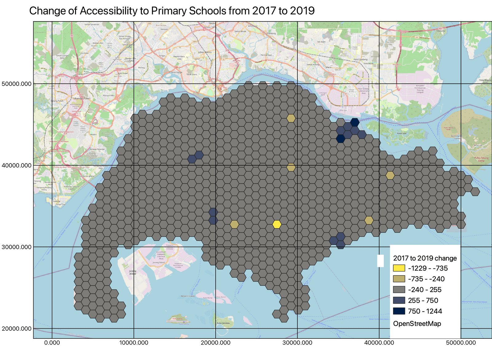

GIS Report - Impact of mergers on equity of distance
Methods
Analytical Hexagons
Distance Matrix Analysis using Vector-based GIS
Analytical Hexagons

We designated 1000m x 1000m hexagons around Singapore to replicate the 1km radius around schools. We did this to mimic the priority area parents of incoming P1 students get when choosing their primary school.
The diagram above shows that the impact of the merger was relatively contained. The regions that were most affected were Pasir Ris, Bedok, and Tanglin, where the shortest distance to a nearest Primary school increased by 240m - 1229m.
Several areas had schools added to them, such as parts of Punggol, Chua Chu Kang and Clementi, where the average distance to nearest primary school decreased by 225m to 1244m
Overall, the average distance to a primary school in Singapore remained relatively constant.
Distance Matrix Analysis using Vector-based GIS

7 primary schools have been merged in 2019 as shown in this map.
The Home-School Distance category priority during the primary school registration exercise takes into account the distance away from schools and citizenship, where Singaporean Citizens living within 1 to 2 km of the school are given priority in the event where the number of registrants is greater than vacancies for a particular school.
A 2km buffer was constructed around the 14 schools and a distance matrix computed to reflect the impact of school mergers. Orange buffers are for receiving schools and blue buffers are for schools that were being merged into other schools in 2019.

Extracting the residential centroids that fall within the 2km buffers around merged primary schools, the difference in minimum distance between 2017 and 2019 school location was derived and symbolised.
Mergers for Bendemeer and Cedar primary schools saw the largest change in minimum distance as merge sites are further from old sites compared to other schools. Homes labelled red are 2.4km further from new sites while those labelled green are 1.8km closer.
Symbolised green vector points indicate a decrease in minimum distance from homes to newly merged schools. The merger led to homes becoming closer to the new school site. Symbolised red vector points indicate an increase in minimum distance from homes to newly merged schools. The merger led to homes becoming further from the new school site. Symbolised pale yellow vector points indicate little change in minimum distance particularly for Jun Yuan and Casuarina primary schools in the East where merged sites are relatively closer to old sites compared to other merged schools.

Zooming in on Balestier Hill and Bendemeer Primary schools for closer analysis, homes nearer to the newly merged site - Bendemeer Primary school - are 1.4km to 2.4km closer to the Bendemeer Primary school. Homes surrounding the previous school site - Balestier Primary school - are 1.6km to 2.4km further from Bendemeer Primary school. While homes in the middle of the two schools saw minimal change - only a 500 to 600m change in minimum distance.

To study the demand for primary schools, the population of primary school going children by subzone was analysed. The choropleth map shows the percentage change of population of primary school going children from 2017 to 2019. Negative values indicate an increase in the percentage of primary school population. There is a noticeable increase of 4 to 10% in Seletar, Tampines North, Bukit Batok west (extension) and Tanglin subzones; while a slight increase of 4% to 0.8% is seen in North East region of Punggol, Mount Pleasant and Moulmein subzones in Novena planning area as well as in southern regions such as Margret drive and Redhill. Positive values indicate a decrease in the percentage of primary school going population. There is a noticeable decrease of 2 to 7% in Kent Ridge and central regions such as Newton, and a slight decrease of 0.3 to 2% labelled in light blue constituting a large majority of subzones.
Population choropleth map confirms falling birth rates, as more subzones are seeing a decrease in primary school population though newer estates - Punggol, Sengkang, Seletar and Tampines North - see an increase. Population trends and demand should be considered when planning future school mergers since there will not be a need for new primary schools to be built in maturing estates; instead new schools could better meet the needs of newer estates with younger families.
Conclusion and Future Work
The 2019 primary school mergers’ impact on the minimum distance between residential homes and newly merged schools was minimal. The change in distance was a maximum of about 2.4km, which is a relatively small change in distance. Additionally, the overall change throughout Singapore was relatively small.
Moving forward, there is potential in exploring the impact of Secondary and Junior Colleges as well as analysing how future planned mergers from 2023 onwards will impact students’ equity of access to schools. Accessibility to other primary schools surrounding the affected merged primary schools can also be considered for future study.